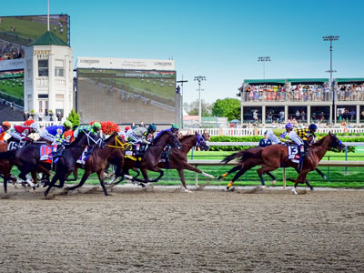
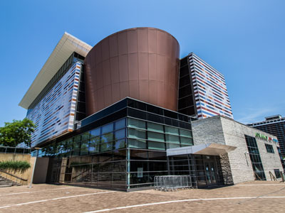
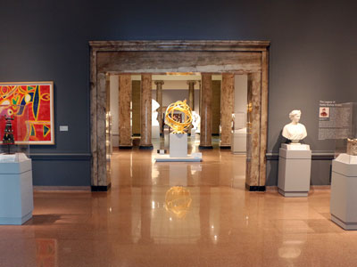
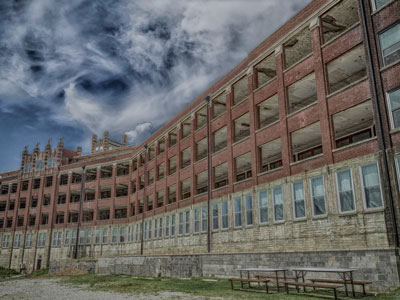
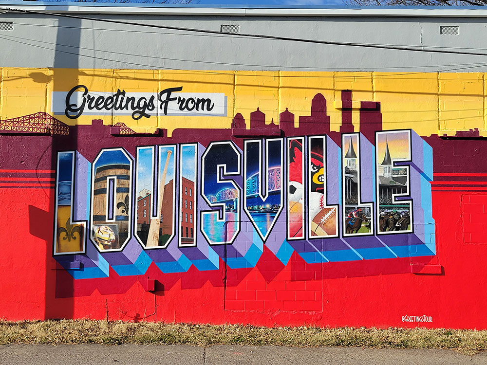
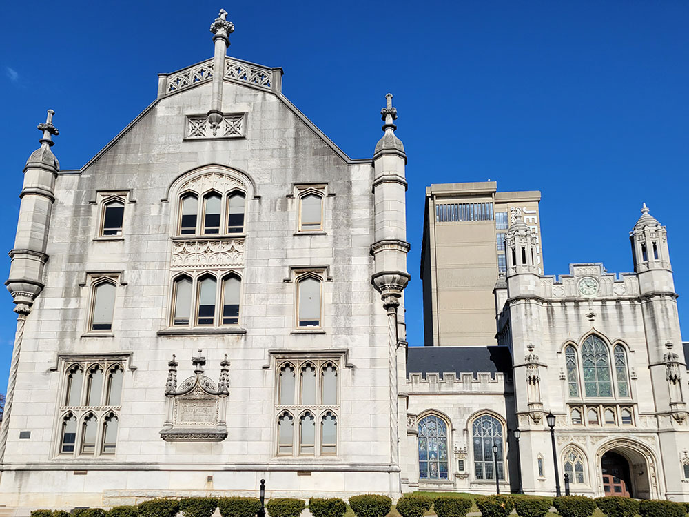
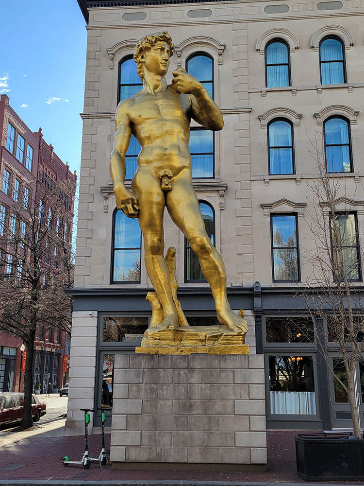
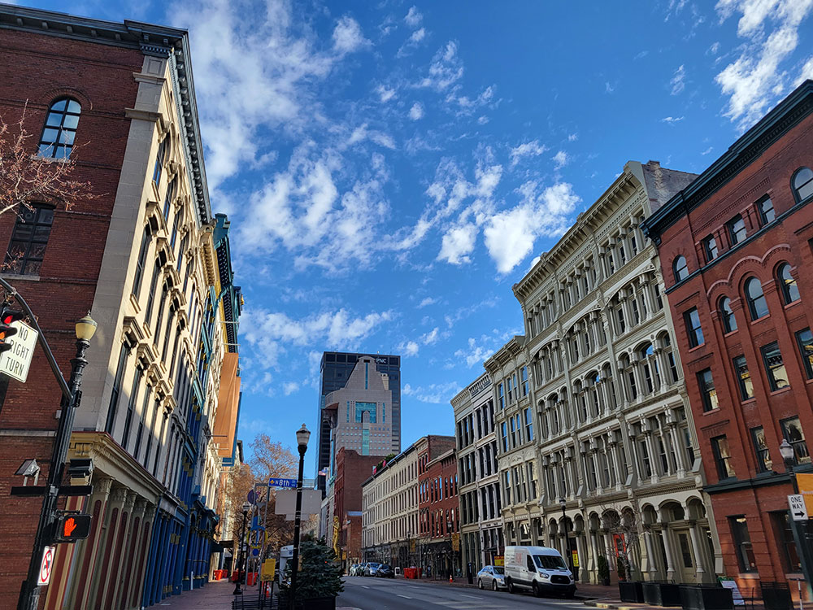
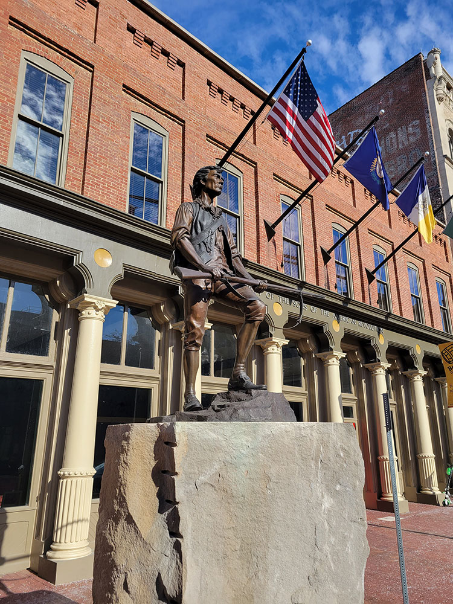
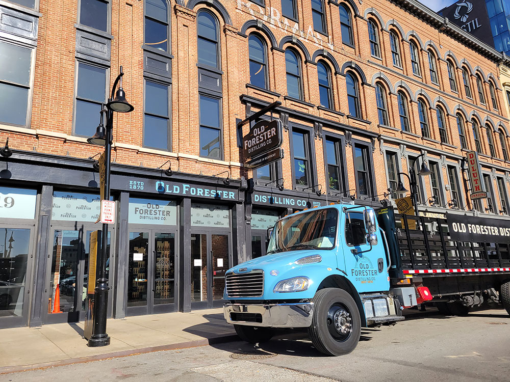

Louisville Travel Guide
Largest city in Kentucky founded in 1778, making it one of the oldest cities west of the Appalachians
Places to See in Louisville
Belle of Louisville
Steamboat moored at its downtown wharf next to the Riverfront Plaza/Belvedere during that claims itself the "most widely traveled river steamboat in American history"
Big Four Bridge
Six-span former railroad truss bridge that crosses the Ohio River, connecting Louisville and Jeffersonville, Indiana and converted to bicycle and pedestrian use in 2014
Cave Hill Cemetery
Victorian era National Cemetery and arboretum is the largest cemetery by area and number of burials in Louisville including Muhammad Ali and Colonel Harland Sanders
Cherokee Park
409-acre municipal park featuring a 2.4 mile scenic loop through the park's pastoral setting featuring rolling hills, open meadows and woodlands

Churchill Downs
Horse racing complex located in south Louisville, famed for hosting the annual Kentucky Derby
Farmington Historic Home
A restored Federal-style manor house at the center of a former hemp plantation, notable for its Jeffersonian architectural design and as the site of a young Abraham Lincoln's three-week visit in 1841.
Fourth Street Live!
350,000-square-foot entertainment and retail complex located in Downtown Louisville

Capablancaa, CC BY-SA 4.0, via Wikimedia Commons; Image Size Adjusted

Frazier History Museum
History museum and an affiliate of the Smithsonian Institution, the Frazier documents and reinterprets stories from history using artifacts, gallery talks, and live interpretations

Bill Brine, CC BY 2.0, via Wikimedia Commons; Image Size Adjusted
.jpg){kind=link}
Kentucky Derby
Horse race held annually in Louisville, on the first Saturday in May, capping the two-week-long Kentucky Derby Festival
Louisville Slugger Museum & Factory
Museum showcases the story of Louisville Slugger baseball bats in baseball and in American history
Louisville Union Station
Historic railroad station reflecting Richardsonian Romanesque style of architecture
Louisville Waterfront Park
85-acre (340,000 m2) municipal park adjacent to the downtown area of Louisville, Kentucky and the Ohio River

Proof377, CC BY-SA 4.0, via Wikimedia Commons; Image Size Adjusted

Muhammad Ali Center
Non-profit museum and cultural center dedicated to boxer Muhammad Ali, a native of Louisville
Old Louisville
Historic district and neighborhood in central Louisville, Kentucky is the third largest such district in the United States, and the largest preservation district featuring almost entirely Victorian architecture

Sailko, CC BY 3.0, via Wikimedia Commons; Image Size Adjusted

Speed Art Museum
Oldest, largest, and foremost museum of art in Kentucky housing ancient, classical, and modern art from around the world with the focus on Western art, from antiquity to the present day
Aroun Kesavaraj, CC BY-SA 4.0, via Wikimedia Commons; Image Size Adjusted

Thunder Over Louisville
Annual kickoff event of the Kentucky Derby Festival, is an airshow and fireworks display generally held each April, about two weeks before the first Saturday in May, or Derby Day

Royasfoto73, CC BY-SA 4.0, via Wikimedia Commons; Image Size Adjusted

Waverly Hills Sanatorium
Former sanatorium opened in 1910 as a two-story hospital to accommodate 40 to 50 tuberculosis patients now open for tours
Overview
Louisville is the largest city in Kentucky, on the Ohio River at the Falls of the Ohio, and it is world-famous as the home of the Kentucky Derby, held every year on the first Saturday in May at Churchill Downs. It is also known as the birthplace of boxing legend Muhammad Ali, as the home of the Louisville Slugger baseball bat, and as the center of the bourbon industry. Louisville is a mix of Southern hospitality, Midwestern friendliness, and a creative food and arts scene.
Visitors come to Louisville for the Derby and the Kentucky Derby Museum, for the Louisville Slugger Museum & Factory, and for the Muhammad Ali Center. They also come for bourbon on Whiskey Row and the Urban Bourbon Trail, for the Waterfront Park, the Victorian homes of Old Louisville, and the restaurants of NuLu and Butchertown.
History
Louisville was founded in 1778 by George Rogers Clark and named for King Louis XVI of France in gratitude for his support in the American Revolution, and it grew around the Falls of the Ohio, a stretch of rapids that forced boats to stop and unload. It became a major river port and by 1850 was one of the largest cities in the country, with a thriving trade in tobacco, hemp, and whiskey. The first Kentucky Derby was run in 1875 at Churchill Downs, and the city has remained a center for horse racing, bourbon, and manufacturing. Louisville was also an important city in the civil rights era, and the Louisville Slugger bat, made here since 1884, became a symbol of American baseball.
Sightseeing and Popular Landmarks
Churchill Downs, with its twin spires, is the home of the Derby, and the Louisville Slugger Museum & Factory has a 120-foot bat leaning against the building. The Big Four Bridge, a former railroad bridge, is now a pedestrian bridge over the Ohio River, and Waterfront Park is a large downtown park with a fountain and playground. The Belle of Louisville, a 1914 steamboat, offers river cruises, and Union Station, 4th Street Live, and Whiskey Row are other downtown landmarks.
Culture and Museums
The Kentucky Derby Museum has exhibits on the history of the race and tours of Churchill Downs, and the Muhammad Ali Center celebrates the life of the boxer and his humanitarian work. The Speed Art Museum is the oldest and largest art museum in Kentucky, and the Frazier History Museum covers the story of the state and the U.S. in a downtown building. The Farmington Historic Home and Cave Hill Cemetery, with graves such as Colonel Sanders, and Waverly Hills Sanatorium, a haunted tuberculosis hospital, are other attractions.
Parks
Louisville is known for its park system, designed by Frederick Law Olmsted, which includes Cherokee Park, with trails and a scenic drive, and Iroquois and Shawnee Parks. Waterfront Park is an 85-acre park on the Ohio River with views of Indiana, and the Louisville Loop is a trail system that is planned as a 100-mile loop around the city. The Falls of the Ohio State Park across the river in Indiana has fossil beds, and the Louisville Zoo is a popular family attraction. Thunder Over Louisville, the largest annual fireworks show in the country, opens the Derby Festival each April.
Sports
Louisville's professional team is Racing Louisville FC of the National Women's Soccer League, which plays at Lynn Family Stadium. The city is better known for the Kentucky Derby and for the University of Louisville Cardinals, whose basketball and football games draw large crowds.
Seasons and Weather
Louisville has a humid subtropical climate. Summers are hot and humid, with highs in the upper 80s°F, and winters are cool, with highs in the 40s°F and about 12 inches of snow. Spring and fall are the most pleasant seasons, and the Derby in early May is the busiest time of the year, so hotels should be booked well in advance.
This article uses material from Wikipedia as well as information from official tourism and institutional sources. Key references include Go to Louisville, Churchill Downs, Kentucky Derby Museum, Louisville Slugger Museum & Factory, Muhammad Ali Center, Speed Art Museum, Racing Louisville FC, and National Weather Service Louisville. Wikipedia material is from the articles "Louisville, Kentucky" and "Kentucky Derby", and is available under the Creative Commons Attribution-Share-Alike License 3.0.





